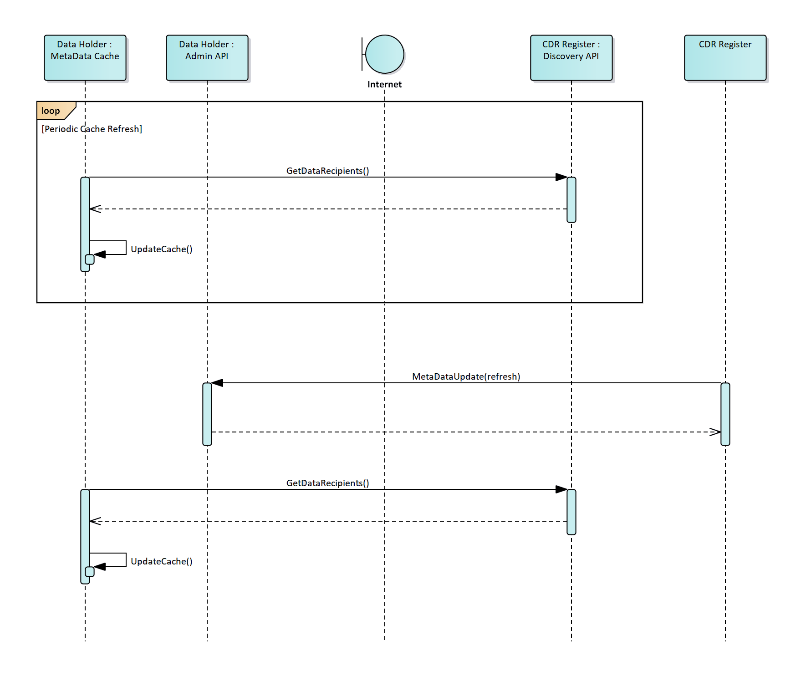

Introduction
Consumer Data Right
The Australian Government is introducing a Consumer Data Right (CDR) to give consumers more control over their data.
The CDR will be rolled out sector-by-sector across the economy, starting with the banking sector.
The Government has announced that the energy and telecommunications sectors will follow banking.
Further information on the CDR is available on the Treasury website:
https://treasury.gov.au/consumer-data-right
ACCC's Role
The ACCC will be lead regulator for the CDR regime, and will have roles and functions that include:
- drafting rules to implement and govern the CDR in each sector;
- accrediting entities to receive data;
- managing an online register of accredited data recipients and data holders;
- providing education and guidance on the CDR;
- recommending to government future sectors to be brought within the CDR; and
- compliance and enforcement activities.
Further information on the ACCC’s role in the CDR is available on the ACCC’s website:
https://www.accc.gov.au/focus-areas/consumer-data-right-cdr-0
Data Standards Body
A Data Standards Body (DSB) has been established to develop technical standards to implement the CDR. The work of the DSB is being delivered by a team within Data61, overseen by interim DSB Chair Mr Andrew Stevens, and with industry and consumer advice provided by an Advisory Committee.
Further information on the DSB is available on its website:
https://consumerdatastandards.org.au
Consultation outline
The ACCC is using this website as a tool to consult on aspects of the design and implementation of the register of CDR participants (the CDR Register). The ACCC is seeking comments from interested stakeholders.
Consultation rules of engagement
The ACCC intends to conduct public consultation on the CDR Register. Questions or comments that participants might ask us via email or private message are likely to be questions or comments other participants have as well. Our answers will be of interest to everyone. There are likely to be experiences and lessons everybody working in this ecosystem can learn from. Having these conversations transparently helps reduce duplication, resolve issues faster and keep everyone up to date with the conversation.
We ask that all contributors to the CDR Register GitHub comply with the GitHub Community Forum Code of Conduct.
In addition, it would be appreciated if the following rules are adhered to when commenting or contributing:
- For transparency, if you work at or are associated with an organisation with an interest in the Consumer Data Right, please indicate this in your response.
- Please ensure you are aware of and compliant with any social media guidelines or internal processes for response set by your organisation before providing feedback.
The ACCC will be actively monitoring and reviewing any comments/responses which are provided, however will not be responding to individual comments. Depending on the number of responses/comments we get, we will assess what the most efficient and effective way to engage with the community is, noting that we want this to be a collaborative effort.
Feedback sought
To guide responses and comments, we are seeking input which will assist us in ensuring that the Register designs meets the needs of the overarching CDR ecosystem. The focus should be on validating the designs, and providing any necessary context and reasoning.
Further consultation
The ACCC is currently designing and building the CDR Register, and will engage further with interested stakeholders as part of this process.
The ACCC expects to soon publish for consultation concepts relating to the CDR Register including:
- Business and technical design principles
- Versioning
Consumer Data Right Register
The ACCC will perform the role of the CDR Registrar. The CDR Registrar will have the function of maintaining the Register of Accredited Persons (the Register) who have been granted accreditation by the ACCC in its capacity as Data Recipient Accreditor. Accredited persons become accredited data recipients upon receipt of CDR data.
The Register will also include information about data holders. Information about accredited data recipients and data holders recorded in the Register will be made available to the public in accordance with the CDR rules. Additional information held in the Register will be available to accredited data recipients and data holders.
Ecosystem Entities
CDR consumer
A consumer, as defined in the CDR rules, who is able to a make a request for disclosure of CDR data to themselves or to an accredited data recipient.
Data Holder
A person who holds designated CDR data and is required by the CDR rules to disclose product and consumer data.
Accredited Data Recipient
A person that has been granted accreditation by the ACCC and is able to collect, and receives, CDR data about a CDR consumer from a data holder with the consent of the consumer.
Ecosystem Component Diagram
The following is a high level overview of the CDR ecosystem outlining the components and API endpoints each participant within the ecosystem will be expected to implement. Note that ADRs are expected to have one or more Software Applications consuming CDR data.

Data Holder
| Component | Responsibility |
|---|---|
| Consent Authorisation Manager | Provides authorisation functionality to the consumer including consent withdrawal propagation to the relevant Accredited Data Recipients |
| Secrets Manager | Provides key management for issuance/rotation of JWKs & certificates. Storing of authorisations |
| Identity Provider | Provides identity services to the Data Holder’s platform for identifying Accredited Data Recipients and the CDR Register |
| Standards Platform | Exposes banking, consumer and product data to Accredited Data Recipients as per the Consumer Data Standards: https://consumerdatastandardsaustralia.github.io/standards/#consumer-data-standards-banking-apis https://consumerdatastandardsaustralia.github.io/standards/#consumer-data-standards-common-apis |
| MetaData Cache | Cache of discovered Data Holders within the CDR ecosystem. Caching rules and logic are described at: Cache Refresh Metadata Request |
| MetaData Update & Reporting | Provides functionality to facilitate Metadata Update requests from the ACCC as per the Consumer Data Standards https://consumerdatastandardsaustralia.github.io/standards/#metadata-update |
| Authorisation Dashboard | The Dashboard provided to the consumer to view their current sharing authorisations with the Data Holder. The dashboard also provides the functionality to explicitly withdraw these authorisations with this Data Holder |
Accredited Data Recipient
| Component | Responsibility |
|---|---|
| Software Application(s) | One or more consumer facing applications provided by the Accredited Data Recipient |
| Application Platform | Accredited Data Recipient’s application which consumes consumer and product data from Data Holders as per the Consumer Data Standards: https://consumerdatastandardsaustralia.github.io/standards/#consumer-data-standards-banking-apis https://consumerdatastandardsaustralia.github.io/standards/#consumer-data-standards-common-apis |
| Consent Manager | Provides consent functionality to the consumer including consent withdrawal propagation to the relevant Data Holder |
| Secrets Manager | Provides key management for issuance/rotation of JWKs & certificates. Storing of consents |
| Identity Provider | Provides identity services to the Accredited Data Recipient’s platform for identifying Data Holders and the CDR Register |
| MetaData Cache | Cache of discovered Data Holders within the CDR ecosystem. Caching rules and logic are described at: Cache Refresh Metadata Request |
| MetaData Update | Provides functionality to facilitate Metadata Update requests from the ACCC as per the Consumer Data Standards https://consumerdatastandardsaustralia.github.io/standards/#metadata-update |
| Consent Dashboard | The Dashboard provided to the consumer to view the consents given to this Accredited Data Recipient to collect and use CDR data. The Dashboard also provides the functionality to explicitly withdraw these consents with this Accredited Data Recipient |
Register
Identifies when participants within the ecosystem change significantly and notifies relevant Data Holders and Accredited Data Recipients of those changes via the MetaData Update call on the Admin API. Details on this process is outlined at: Cache Refresh Metadata Request
The Register also exposes the Discovery API, allowing Data Holders and Accredited Data Recipients to discover the participants within the CDR ecosystem. Discovery API is defined at: Register Discovery API
Certificate Authority
The CDR Register will be using DigiCert as the ACCC endorsed Certificate Authority. Further details on certificate management can be found at: Certificate Management
Client Registration
Dynamic Client Registration
Software Products within the Consumer Data Right will dynamically register with one or more Data Holders, to obtain client identifiers used to retrieve consumer data on behalf of a consumer.
The CDR Registration model is derived from the Open Banking UK model with design input from the ABA https://github.com/cdr-register/register/files/3577911/ABA_RESPONSE_DYvS_SA_05092019_Appendix.pdf
Overview
Pre-Requisite: Data Recipient is accredited and the associated Software Product has been configured within the CDR Register [Collaboration diagram]
Software Statement Assertion (SSA) Design
A Software Statement is defined in RFC7591 as: A digitally signed JSON Web Token (JWT) [RFC7519] that asserts metadata values about the client software.
Within the Consumer Data Right, the CDR Register will issue Software Statements for Accredited Data Recipient Software Products
The trust relationship the authorization server has with the issuer of the software statement is to be used as an input to the evaluation of whether the registration request is accepted.
A software statement is presented by Accredited Data Recipient’s software to Data Holder’s authorisation server as part of a client registration request.
An SSA will be issued for each Software Product and is retrievable using the following methods:
| Phase 1 | Download from the RAAP Portal, accessible by an approved technical representative for the Accredited Data Recipient |
| Phase 2 | Retrievable via an API exposed on the CDR Register, to be built in a future iteration |
Namespacing
The design will conform to RFC7591 and not use the software namespace as the convention used in the Open Banking UK Dynamic Registration standard.
Digital Signing Algorithm
Conforming to FAPI-RW, SSAs will be signed on the CDR Register using ES256
SSA Lifetime
Downloaded SSAs will have a lifetime of 30 minutes SSA’s obtained via an API will have a lifetime of 2 minutes
SSA Definition
| Client Metadata | Required | Description |
|---|---|---|
| iss | Required | MUST contain an "iss" (issuer) claim denoting the party attesting to the claims in the software statementvalue: "cdr-register" |
| iat | Required | “Issued at time” claim |
| exp | Required | "Expiration Time" claim |
| jti | Required | "JWT ID" claim |
| org_id | Required | A unique identifier string assigned by the CDR Register that identifies CDR Participant (e.g. ADR) |
| org_name | Required | Human-readable string name of the Accredited Data Recipient to be presented to the end user during authorization. |
| org_contacts | Required | JSON object containing the contact details of the Primary Business Contact and Primary Technical Contact [{name: firstname + lastname, email: email address, phone: telephone or mobilephone, type: Primary Business Contact }, … ] |
| iss_tos | Optional | URL string that points to a humanreadable terms of service document for the Consumer Data Right Regime |
| client_name | Required | Human-readable string name of the software product to be presented to the end-user during authorization |
| client_description | Required | Human-readable string name of the software product description to be presented to the end user during authorization |
| redirect_uris | Required | Array of redirection URI strings for use in redirect-based flows |
| logo_uri | Required | URL string that references a logo for the client. If present, the server SHOULD display this image to the end-user during approval |
| scope | Required | String containing a space-separated list of scope values that the client can use when requesting access tokens. |
| tos_uri | Optional | URL string that points to a humanreadable terms of service document for the Software Product |
| policy_uri | Required | URL string that points to a humanreadable policy document for the Software Product |
| jwks_endpoint | Required | URL string referencing the client's JSON Web Key (JWK) Set [RFC7517] document, which contains the client's public keys |
| software_id | Required | String representing a unique identifier assigned by the ACCC Register and used by registration endpoints to identify the software product to be dynamically registered. The "software_id" will remain the same across multiple updates or versions of the same piece of software. |
| software_version | Required | Internal version of the Software product registering |
| software_roles | Required | String containing a role of the software in thwe CDR Regime. Initially the only value used with be “Data Recipient” |
| revocation_uri | Required | URI string that references the location of the Software Product consent revocation endpoint as per https://consumerdatastandardsaustralia.github.io/standards/#end-points |
Logos
Logos will be incorporated within the SSA to ensure there is consistency between the logos published on the Public Register and those passed to Data Holders as part of Registration
CDR Register SSA Signing
SSAs will be signed by the Register. Register public keys will be exposed on a dedicated JWKS URI endpoint at: [TBD]
Software Product JWKS
JWKS will be decentralised and the URI described in the OIDC Discovery endpoint
Registration Request using JWT
| Claim | Required | Description |
|---|---|---|
| iss | Required | Contains the identifier for the ADR Software Product as defined in the ACCC Register |
| iat | Required | “Issued at time” claim |
| exp | Required | "Expiration Time" claim |
| jti | Required | "JWT ID" claim |
| aud | Required | Data Holder auth server URI |
| software_statement | Required | Software statement assertion issued by the CDR Register |
| token_endpoint_auth_signing_alg | Required | The algorithm used for signing the JWT |
| token_endpoint_auth_signing_method | Required | value: private_key_jwt |
| grant_types | Required | value: [authorization_code, refresh_token, urn:ietf:params:oauth:grant-type:jwtbearer] |
| response_types | Required | value: [code id_token] |
| application_type | Required | value:[OIDC-R] |
| id_token_signed_response_alg | Optional | Algorithm which the ADR expects the id_token to be signed with, if an id_token is returnedSupported values as constrained by FAPI-RW |
| request_object_signing_alg | Optional | Algorithm which the ADR expects to sign the request object if a request object will be part of the authorization request sent to the Data HolderSupported values as constrained by FAPI-RW |
Data Holder Authorisation Server Requirements
Registration API Endpoints
Data Holder Authorisation Servers must expose the following Dynamic Client Registration API endpoints
| HTTP Verb | Authorisation Server Support | Grant Type |
|---|---|---|
| POST | Required | N/A |
| PUT /{clientID} | Required | Client Credentials |
| GET /{clientID} | Required | Client Credentials |
| DELETE /{clientID} | Required | Client Credentials |
Client Credentials grant must conform to the CDR Register security profile as outlined at: https://cdr-register.github.io/register/#client-authentication
Participant Statuses
ADR and Software Product Statuses
The accreditation status of Accredited Data Recipients, and the status of their associated software products, may traverse through multiple states in the CDR as a result of decisions by the ACCC, in its capacity as Data Recipient Accreditor, or where an Accredited Data Recipient surrenders accreditation.
Data Holders will have the responsibility to ensure that CDR data relating to consumers is disclosed to Accredited Data Recipients and to cease sharing data where the accreditation of a data recipient is
- Suspended or revoked by the ACCC
- Surrendered by the Data Recipient
The Register will notify all Data Holders of the above changes in Accredited Data Recipient status as per the ACCC’s decisions.

| Accredited Data Recipient & Software Product Statuses | Data Holder’s Responsibility |
|---|---|
| Active | Disclose CDR data in response to valid requests in accordance with the CDR rules and standards Facilitate consent authorisation requests |
| Suspended | Cease disclosure of CDR data Cease facilitating consent authorisation requests |
| Revoked | Cease disclosure of CDR data Cease facilitating consent authorisation requests |
| Surrendered | Cease disclosure of CDR data Cease facilitating consent authorisation requests |
Checking Validity of Data Recipient and associated Software Product

ADR Active
Once a Data Recipient has been granted accreditation by the ACCC (as Data Recipient Accreditor) and has completed the necessary steps to be added to the Register (as specified in the rules), the following actions and responsibilities are:
- The Registrar will issue the Accredited Data Recipient all required certificates
- The Accredited Data Recipient's status will be set to 'active'
- Data Holders will retrieve the new ADR record as part of their regular metadata cache refresh
- All Data Holders will be required to disclose data, in accordance with the CDR rules, with this new Accredited Data Recipient
ADR Suspended
Where the ACCC (as Data Recipient Accreditor) has made a decision to suspend the accreditation of an Accredited Data Recipient, and has notified the decision to the Registrar the following actions and responsibilities will arise:
- The Registrar will revoke the Accredited Data Recipient's resource client certificates for all associated software products
- The Registrar will update the CDR Register to change the Accredited Data Recipient's status (and status of all associated software products) to 'suspended'
- The CDR Register will initiate the metadata cache update process with all Data Holders within the CDR. Data Holders will be required to refresh their cache within the specified timeframe
- All Data Holders will prevent disclosure of CDR data with the Accredited Data Recipient while it is in a suspended state
ADR Reactivated
An Accredited Data Recipient can move from the suspended status back to the active status where a suspension expires or is revoked by the ACCC (as Data Recipient Accreditor). Once this has occurred, the following actions and responsibilities are:
- The Registrar will reissue the Accredited Data Recipient's resource client certificates for all associated software products
- The Registrar will update the CDR Register to change the Accredited Data Recipient's status (and status of all associated software products) to 'active'
- The CDR Register will initiate the metadata cache update process with all Data Holders within the CDR. Data Holders will be required to refresh their cache within the specified timeframe
- All Data Holders will disclose CDR data as required by the CDR rules with this Accredited Data Recipient
ADR Revoked
Where the ACCC (as Data Recipient Accreditor) has made a decision to revoke the accreditation of an Accredited Data Recipient, and has notified the decision to the Registrar, the following actions and responsibilities will arise:
- The Registrar will revoke Accredited Data Recipient's resource client certificates for all associated software products
- The Registrar will update the CDR Register to change the Accredited Data Recipient's status (and status of all associated software products) to 'revoked'
- The CDR Register will initiate the cache update process with all Data Holders within the CDR. Data Holders will be required to refresh their cache within the specified timeframe
- All Data Holders prevent disclosure of CDR data with this Accredited Data Recipient
ADR Surrendered
Where an Accredited Data Recipient has surrendered their accreditation, and the Data Recipient Accreditor has notified the Registrar of the surrender, the following actions and responsibilities will arise:
- The Registrar will revoke Accredited Data Recipient's resource client certificates for all associated software products
- The Registrar will update the CDR Register to change the Accredited Data Recipient's status (and status of all associated software products) to 'surrendered'
- The CDR Register will initiate the cache update process with all Data Holders within the CDR
- All Data Holders will prevent disclosure of CDR data with this Accredited Data Recipient
Software Product Status Changes
New ADR Software Product Active
Once an Accredited Data Recipient has completed the necessary steps to add a new software product to the Register, the following actions and responsibilities are:
- The Registrar will issue the Software Product’s resource client certificate
- The Software Product status will be set to 'active'
- Data Holders will retrieve the new ADR record as part of their regular metadata cache refresh
- All Data Holders will be required to disclose data, in accordance with the CDR rules, with this new Accredited Data Recipient Software Product
ADR Software Product Suspended
Where the ACCC (as Data Recipient Accreditor) has made a decision to suspend the status of an Accredited Data Recipient’s Software Product, and has notified the decision to the Registrar the following actions and responsibilities will arise:
- The Registrar will revoke the Software Product’s resource client certificate
- The Registrar will update the CDR Register to change the Software Product’s status to 'suspended'
- The CDR Register will initiate the metadata cache update process with all Data Holders within the CDR. Data Holders will be required to refresh their cache within the specified timeframe
- All Data Holders will prevent disclosure of CDR data with the Accredited Data Recipient’s Software Product while it is in a suspended state
ADR Software Product Reactivated
A Software Product can move from the suspended status back to the active status where a suspension expires or is revoked by the ACCC (as Data Recipient Accreditor). Once this has occurred, the following actions and responsibilities are:
- The Registrar will reissue the Software Product’s resource client certificate
- The Registrar will update the CDR Register to change the Software Product’s status to 'active'
- The CDR Register will initiate the metadata cache update process with all Data Holders within the CDR. Data Holders will be required to refresh their cache within the specified timeframe
- All Data Holders will disclose CDR data as required by the CDR rules with this Accredited Data Recipient’s Software Product
ADR Software Product Revoked
Where the ACCC (as Data Recipient Accreditor) has made a decision to revoke the status of an Accredited Data Recipient’s Software Product, and has notified the decision to the Registrar, the following actions and responsibilities will arise:
- The Registrar will revoke the Software Product’s resource client certificate
- The Registrar will update the CDR Register to change the Software Product’s status to 'revoked'
- The CDR Register will initiate the cache update process with all Data Holders within the CDR. Data Holders will be required to refresh their cache within the specified timeframe
- All Data Holders prevent disclosure of CDR data with this Accredited Data Recipient’s Software Product
ADR Software Product Surrendered
Where an Accredited Data Recipient decommissions a Software Product, and the Data Recipient Accreditor has notified the Registrar of the decommissioning, the following actions and responsibilities will arise:
- The Registrar will revoke the Software Product’s resource client certificate
- The Registrar will update the CDR Register to change the Software Product’s status to 'surrendered'
- The CDR Register will initiate the cache update process with all Data Holders within the CDR
- All Data Holders will prevent disclosure of CDR data with this Accredited Data Recipient’s Software Product
Data Holder Status Change
Rules regarding Data Holder off-boarding and revocation have not yet been provided. Updates to this design will be added once the rules have been defined.
Metadata Cache Management Metrics
| Maximum Cache update period | 6 hours |
| Maximum Time between Cache Refresh Metadata Request and call to Discovery API |
5 minutes |
Cache Refresh Metadata Request
Data Holders and Accredited Data Recipients will be required to implement the Admin endpoint as per CDS standard: https://consumerdatastandardsaustralia.github.io/standards/#admin-apis
This endpoint exposes functionality for the ACCC to request participants to refresh their caches. Cache refreshes may be requested in the following scenarios:
- A new Data Holder becomes active
- A new Accredited Data Recipient becomes active
- A Data Holder has been surrendered from the CDR
- An Accredited Data Recipient has been suspended, revoked, reactivated or surrendered from the CDR Register
- A Data Holder's or Accredited Data Recipient's JWK has been removed due to compromise
- Data Holder's or Accredited Data Recipient's endpoints have changed
Data Holder Discovery of Accredited Data Recipients

Accredited Data Recipient Discovery of Data Holders

Incident Management
Currently under the draft CDR rules, Data Holders within the CDR ecosystem will be able to refuse to disclose CDR data in response to valid requests from Accredited Data Recipients:
(a) where the Data Holder has reasonable grounds to believe that disclosure would create a real risk of harm or abuse to an individual or adversely impact the security, integrity or stability of the Register or the IT systems of the Data Holder used to receive and response to CDR data requests. Reliance on this exemption is to be notified to the ACCC within 24 hours; or
(b) in the circumstances set out in the standards
Security Profile
Overview
The security profile of the CDR Register follows the conventions defined by the Consumer Data Standards Security Profile
The CDR Register Discovery API will use
Mutual Authentication TLS[MTLS] as the transport security and the OIDCclient_credentialsgrant type authentication. All client and server certificates are generated by the CDR Register to facilitate this transport .The Client Authentication method to be used by ADRs or DHs to the CDR Register will use
private_key_jwtfor procuring the Access Token.
Please refer to the Consumer Data Standards Security Overview for Symbols and Abbreviated Terms
Client Authentication
Using the same client authentication approach as the Consumer Data Standard, interactions with and by the CDR Register use private_key_jwt Client Authentication method as specified at section 9 of [OIDC].
Data Holders MUST support the authentication of the CDR Register using the
private_key_jwtclient authentication methodData Recipients MUST support the authentication of the CDR Register using the
private_key_jwtclient authentication methodThe CDR Register MUST support the authentication of the Data Holders using the
private_key_jwtclient authentication methodThe CDR Register MUST support the authentication of the Data Recipients using the
private_key_jwtclient authentication methodData Holder and Data Recipient public keys MUST only be obtained from the CDR Register.
CDR Register public keys MUST only be obtained from the exposed endpoint
As per the Consumer Data Standards, While [MTLS] is utilised for transaction security and as a Holder of Key mechanism the PKI Mutual TLS OAuth Client Authentication Method SHALL NOT be supported as the mechanism for client authentication.
private_key_jwt
CDR Discovery Access Token Request using Client Authentication
Non-Normative Examples
POST /token HTTP/1.1
Host: www.api.discovery.cdr.gov.au
Content-Type: application/x-www-form-urlencoded
grant_type=client_credentials&
client_id=12345&
client_assertion_type=urn%3Aietf%3Aparams%3Aoauth%3Aclient-assertion-type%3Ajwt-bearer&
client_assertion=eyJhbGciOiJQUzI1NiIsInR5cCI6IkpXVCIsImtpZCI6IjEyNDU2In0.ey ...
## Decoded client assertion JWT
{
"alg": "PS256",
"typ": "JWT",
"kid": "12456"
}
{
"iss": "12345",
"sub": "12345",
"exp": 1516239322,
"aud": "https://www.infosec.cdr.gov.au/token",
"jti": "37747cd1-c105-4569-9f75-4adf28b73e31"
}
- Access Token will be requested as per the Assertion Framework for OAuth2 Client Authentication profile
- Data Holder and Data Recipient public keys are retrieved from the CDR Register
- Refresh tokens will not be provided for grant_type
client_credentials - The JWT must contain the following Claim Values :
-
iss: The issuer claim which contains a unique identifier for the entity that issued the JWT -
sub: The principal that is the subject of the JWT for client authentication -
aud: The URL of the end point being invoked -
exp: The expiration claim that limits the time window during which the assertion can be used -
jti: The JWT ID claim that provides a unique identifier for the token
When invoking a protected end point, the assertion MUST be sent with the POST method and MUST include the following parameters:
-
grant_type: This MUST be set toclient_credentials -
client_id: This MUST be set to the ID of the calling client -
client_assertion_type: This MUST be set to:urn:ietf:params:oauth:client-assertion-type:jwt-bearer -
client_assertion: This MUST be set to the digitally signed JWT
CDR Register Calling Participant Admin API using Client Authentication
GET /admin/registry/metadata HTTP/1.1
Host: www.admin.dataholder.com.au
Content-Type: application/x-www-form-urlencoded
client_id=register.cdr.gov.au&
client_assertion_type=urn%3Aietf%3Aparams%3Aoauth%3Aclient-assertion-type%3Ajwt-bearer&
client_assertion=eyJhbGciOiJQUzI1NiIsInR5cCI6IkpXVCIsImtpZCI6IjEyNDU2In0.ey ...
## Decoded client assertion JWT
{
"alg": "PS256",
"typ": "JWT",
"kid": "12456"
}
{
"iss": "register.cdr.gov.au",
"sub": "register.cdr.gov.au",
"exp": 1516239322,
"aud": "https://www.infosec.cdr.gov.au/token",
"jti": "37747cd1-c105-4569-9f75-4adf28b73e31"
}
- The CDR Register will expose an endpoint to distribute it's public keys
- The JWT must contain the following Claim Values :
-
iss: The issuer claim which contains a unique identifier for the entity that issued the JWT -
sub: The principal that is the subject of the JWT for client authentication -
aud: The URL of the end point being invoked -
exp: The expiration claim that limits the time window during which the assertion can be used -
jti: The JWT ID claim that provides a unique identifier for the token
When invoking a protected end point, the assertion MUST be sent with the POST method and MUST include the following parameters:
-
client_id: This MUST be set to the ID of the calling client -
client_assertion_type: This MUST be set to:urn:ietf:params:oauth:client-assertion-type:jwt-bearer -
client_assertion: This MUST be set to the digitally signed JWT
Identifiers
client_id, iss and sub are expected to contain the unique identifier for the client.
The following client identifiers will be used:
| Client | Scenario | Identifier |
|---|---|---|
| CDR Register | Calls to Participant Admin APIs | TDB |
| Data Holder | Calls to CDR Register Discovery API | Data Holder ID |
| Data Recipient | Calls to CDR Register Discovery API | Data Recipient Product ID |
Transaction Security
Please refer to the Consumer Data Standards Transaction Security for Transaction Security details
Endpoints
Participants will be required to register base URIs to group the implementation of the Consumer Data Standards
| Base URI | DH | ADR | Description |
|---|---|---|---|
| PublicBaseUri | Base URI for the Consumer Data Standard public endpoints. This should encompass all endpoints not requiring authentication | ||
| ResourceBaseUri | Base URI for the Consumer Data Standard resource endpoints. This should encompass all CDS resource endpoints requiring authentication | ||
| InfoSecBaseUri | Base URI for the Consumer Data Standard InfoSec endpoints. This should encompass all authentication and authorisation related endpoints This BaseURI must sit on a different domain to the ResourceBaseUri |
||
| AdminBaseUri | Base URI for the Consumer Data Standard admin endpoints called by the CDR Register | ||
| ExtensionBaseUri | Base URI for the Data Holder extension endpoints to the Consumer Data Standard (optional) |
Certificate Management
Issued by ACCC CA for Data Holders
| Certificate | Function | Notes |
|---|---|---|
| Client Certificate | Secures the following:- Notifying ADRs of consent withdrawal | |
| Server Certificate(s) | Certificate is issued to a FQDNSecures the following:- Resource endpoint- InfoSec endpoints- Admin endpoints | It will be up to the DH on how these endpoints aresegregated. They may all be on the one domain(so only one certificate required) or could be separated |
Issued by ACCC CA for Accredited Data Recipients
| Certificate | Function | Notes |
|---|---|---|
| Client Certificate | Secures the following:- Consuming Register APIs- Notifying ADRs of consent withdrawal | |
| Server Certificate(s) | Certificate is issued to a FQDNSecures the following:- InfoSec endpoints- Admin endpoints | It will be up to the ADR on how these endpoints aresegregated. They may all be on the one domain(so only one certificate required) or could be separated |
CDR Certificate Authority
DigiCert will act as the certificate authority that issues and manages certificates to CDR participants as directed by the ACCC in its capacity as the CDR Registrar.
Availability
The following scenarios outline the expectations of Data Holders and Accredited Data Recipients within the Consumer Data Right ecosystem when outages occur.
CDR Register Unavailable
| Result | Participants will not be able to communicate with the Register |
| Impact | Participants will not be able to refresh their metadata caches with up-to-date participant security data |
| Impact | Participants will not be able to refresh their metadata caches with new participants |
| Proposal | Participants will continue to operate until their metadata caches reach a maximum age. Once this time has been reached, consumer data will not be shared. Once the CDR Register becomes available, all participants will receive a refresh cache notification |
Certificate Authority Unavailable
| Result | OCSP services will not be available |
| Impact | Participants will not be able verify the status of certificates |
| Proposal | Participants will honour cached Certificate statuses from previous OCSP checks. Once certificate statuses have expired, data sharing will stop. Once the CA becomes available, certificate statuses are updated through OCSP |
Accredited Data Recipient Unavailable
| Result | Data Holders will not be able to communicate with ADRs |
| Impact | Data Holders will not be able to inform ADRs that consent has been withdrawn |
| Proposal | Data Holders will need to continually poll the ADR until recovery. Upon recovery, the consent withdrawal process will need to be executed |
| Result | The CDR Register will not be able to communicate with ADRs |
| Impact | The CDR Register will not be able to inform the ADRs that they will need to refresh their metadata cache |
| Proposal | Accredited Data Recipients will be expected to refresh their metadata cache upon recovery from any outage |
Data Holder Unavailable
| Result | Accredited Data Recipients will not be able to communicate with Data Holders |
| Impact | Accredited Data Recipients will not be able to inform the Data Holder of change in consent |
| Impact | Accredited Data Recipients will not be able to retrieve Product & Consumer data |
| Proposal | Accredited Data Recipients will need to continually poll the DH until recovery. Upon recovery, the consent withdrawal process will need to be executed |
| Result | The CDR Register will not be able to communicate with the Data Holder |
| Impact | The CDR Register will not be able to inform the Data Holder they will need to refresh their metadata cache |
| Proposal | Data Holders will be expected to refresh their metadata cache upon recovery from any outage |
Availability Questions
What current caching ages do you mandate for your security data?
Feedback for this section can be lodged at: https://github.com/cdr-register/register/issues/6
Versioning
ACCC will follow the versioning conventions outlined by the Data Standards Body.
Refer https://consumerdatastandardsaustralia.github.io/standards/#versioning
It is expected that management of standards for the Register will be incorporated into the remit of the Data Standards Body once mature. The initial version of the Register APIs will align with versions published for the Consumer Data Standards.
A deprecation strategy will be developed in consultation with the Data Standards Body and industry.
The following table illustrates concurrent versioning requirements to ensure backward compatibility. Q indicates a nominal three-month period. When changes are made they are notified at the commencement of a quarter.
| Q1 | Q2 | Q3 | Q4 | Q5 | Q6 | |
|---|---|---|---|---|---|---|
| Get Data Holders | V1.0.0 | V1.0.0 V1.1.0 |
V1.0.0 V1.1.0 |
V1.1.0 V1.2.0 |
V1.1.0 V1.2.0 |
V1.2.0 |
| Get Data Recipients | V1.0.0 | V1.0.0 | V1.0.0 V1.1.0 |
V1.0.0 V1.1.0 |
V1.1.0 V1.2.0 |
V1.1.0 V1.2.0 |
Change Log
The following table lists the changes made in reverse date order (most recent change is at the top).
| Change Date | Version | Description | Detail Of change |
|---|---|---|---|
| 15/09/2019 | 0.5.0 | Updated Client Registration | Updated Client Registration section to detail Dynamic Registration, to reflect updates from GitHub Issue 23 |
| 15/09/2019 | 0.5.0 | Updated Security Profile | Updated Certificate Management section to reflect updates from GitHub Issue 22 |
| 14/08/2019 | 0.4.0 | Updated Swagger Definition | Updated JWK schema to conform to RFC 7517 Added redirectUri to whitelist per product |
| 06/08/2019 | 0.3.0 | Addition of Security Profile | This section outlines all the security requirements for interacting with the CDR Register |
| 31/07/2019 | 0.3.0 | Updated Swagger definition | Removed TermsOfServiceUri, PolicyUri & SupportUri |
| 29/07/2019 | 0.2.0 | Update to Participant Statuses | Simplified the validity of Data Recipient Checks to only use Certificate Status and Software Product Status |
| 29/07/2019 | 0.2.0 | Addition of Endpoints | Grouped Endpoints and Certificate Management, outlining participant requirements to group and secure endpoints |
| 29/07/2019 | 0.2.0 | Updated Swagger definition | Updates include updates to endpoint sets and removing of suspension dates |
| 23/07/2019 | 0.1.0 | Addition of Versioning | Outline of Versioning strategy noting that industry collaboration is required for deprecation strategy |
| 23/07/2019 | 0.1.0 | Addition of Participant Statuses | Outline of Participant Statuses and expectations on participants within the ecosystem |
| 23/07/2019 | 0.1.0 | Update to Consumer Data Right Register Section | Updated component diagram to reflect software product relationship for Data Recipients |
| 09/07/2019 | 0.1.0 | Update to Consumer Data Right Register Section | Updated component diagram to reflect Identity Provider requirements for Data Recipients |
| 08/07/2019 | 0.1.0 | Update to Consumer Data Right Register Section | Provided ecosystem component diagram with responsibilities of each participant |
| 08/07/2019 | 0.1.0 | Addition of Certificate Management Section | Outline of Participant Certificate Issuance and Management expectations |
| 03/07/2019 | 0.1.0 | Addition of Availability Section | Outline of Participant Availability expectations |
| 30/06/2019 | 0.1.0 | Addition of Client Registration Section | Outline of Client Registration Process |
| 18/12/2018 | 0.1.0 | Addition of change log | This change log was added to the standards documentation |